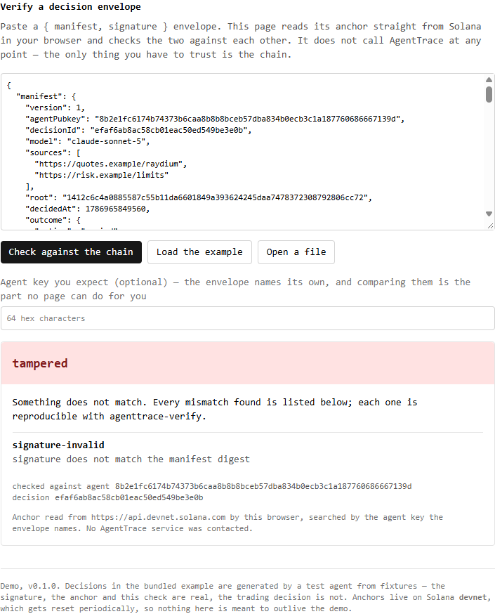
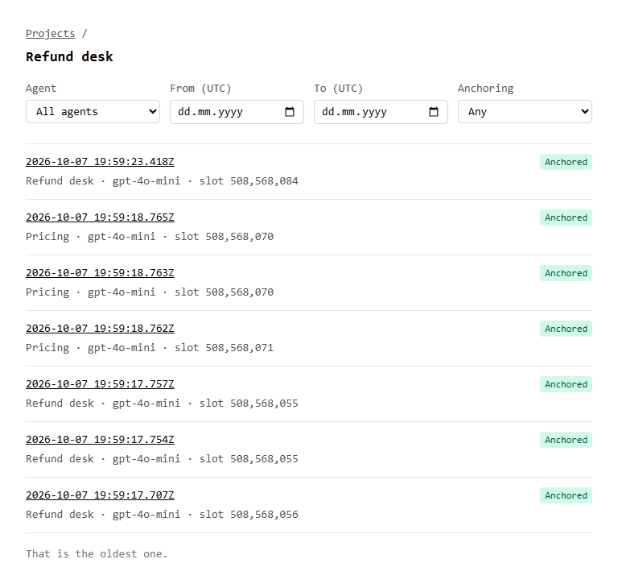

signed decision records for AI agents · Solana devnet
What your AI agent decided, and what it relied on — in a record nobody can quietly rewrite. Not you, not us.
The agent signs each decision with a key that never leaves its machine. The record’s root goes on Solana. Whoever holds the link runs the check — in a browser, or from the source.
$ agenttrace-verify --agent 8b2e…139d --decision efaf…3e0b --manifest decision.jsonverified decision efaf6ab8ac58cb01eac50ed549be3e0b anchor root 1412c6c4…cc72, decided 2026-08-17T11:24:09.560Zno AgentTrace service was asked anything. exit 0# one price in step 0 changed after the fact: 46.79 → 41.79$ agenttrace-verify … --manifest decision-edited.jsontampered2 discrepancies step-hash-mismatch step 0: output does not hash to outputHash signature-invalid signature does not match the manifest digest exit 2
Signed where the decision was made.
The SDK creates the agent’s key pair on first run and keeps the private half in the agent’s own directory. Every decision is signed with it before anything is sent. AgentTrace never sees that key, so it cannot forge a decision or backdate one.
Every step is hashed. Only what you allow is published.
Each step — a model call, a tool call, a data read — is hashed into one root. The policy is an allow-list: a field it does not name never leaves the agent. A shop key the agent passed to its tool is simply not in the record.
0 secrets published in 200 test decisions that carried them.
On Solana within seconds, for a fraction of a cent.
The root and the signature go into one Solana transaction. A browser reads it straight from a public node; AgentTrace is not in that path.
Change one number, and the check names the step.
In the second run above, one price the agent read was changed after the fact. The check says which step no longer matches its hash, and that the signature fails. The same edit in the browser:

50 of 50 altered records caught; 0 false alarms on 200 honest ones.
In your browser, or from the source.
The Verify page reads the anchor from Solana in your browser and calls no AgentTrace service. The same check ships as a command-line verifier in the repository, and by design it cannot reach our API. What no page can do for you: compare the agent key with the one you expect.
Every decision of a project, in one place.
Operators sign in with a code sent by email — no password, no wallet. The journal lists a project’s decisions newest first, filtered by agent, by day and by anchoring state, and the address keeps the filter. A decision’s page there shows the same verdict a stranger sees, plus which agent decided and when it reached us.

Five expressions in your agent.
$ npm install @agenttracewoof/sdk
import { createClient } from '@agenttracewoof/sdk'
const trace = await createClient({
agent: { externalId: 'my-agent', name: 'My agent' },
policy: { stepInput: ['query'], stepOutput: ['answer'], outcome: ['action'] },
})
const id = await trace.record({
model: 'gpt-4o-mini',
steps: [{ type: 'llm', input: { query: 'Should I rebalance?' }, output: { answer: 'yes' } }],
outcome: { action: 'rebalance' },
})
Recording never waits on us: the decision is signed and queued, and delivery runs in the background.
From npm install to a verified decision: 59 s and 1 min 14 s, by a developer new to the SDK, on two open-source agent templates — 5–6 expressions of integration (2026-09-30).
What a verified record does not tell you.
not checked whether the decision was good — only what it relied on not checked fields the policy left out — the record proves what was published not checked who the agent is — a key is a key; compare it with the one you expect not lasting Solana devnet is reset from time to time; every anchor here is a demo
A new project records up to 100 decisions a day. The API sleeps when idle; the first request after a pause can take up to a minute.